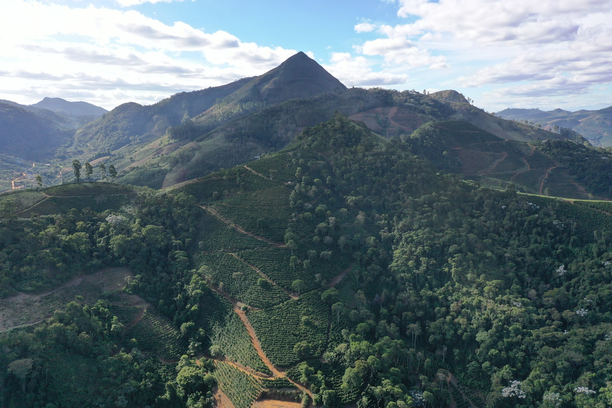
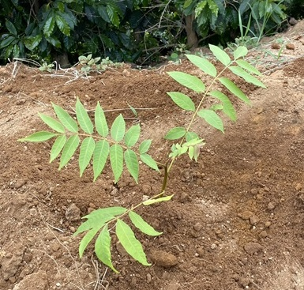

<!DOCTYPE html>
<html lang="en">
<head>
    <link rel="stylesheet" href="https://unpkg.com/leaflet@1.9.4/dist/leaflet.css" integrity="sha256-p4NxAoJBhIIN+hmNHrzRCf9tD/miZyoHS5obTRR9BMY=" crossorigin="" />
    <script src="https://unpkg.com/leaflet@1.9.4/dist/leaflet.js" integrity="sha256-20nQCchB9co0qIjJZRGuk2/Z9VM+kNiyxNV1lvTlZBo=" crossorigin=""></script>
    
    <link rel="stylesheet" href="Leaflet.Coordinates-master\dist\Leaflet.Coordinates-0.1.5.css"/>
    <link rel="stylesheet" href="Leaflet.Coordinates-master\dist\Leaflet.Coordinates-0.1.5.ie.css"/>
    <script src="Leaflet.Coordinates-master\dist\Leaflet.Coordinates-0.1.5.src.js"></script>
   
    <script src="walessonarb.js"></script>
    <script src="cedroarb.js"></script>

    <style>
        #map {position: absolute; top: 0; bottom: 0; left: 0; right: 0;}
    </style>
    <meta charset="UTF-8">
    <meta name="viewport" content="width=device-width, initial-scale=1.0">
    <title>WebGIS Curu</title>
</head>
<body>
    <div id = "map"></div>
    <script>
       


        const map = L.map('map', {
            attributionControl:false,
            crs: L.CRS.Simple,
            minZoom: -5
        });
        var osm = L.tileLayer();

        const bounds = [[-320, 135], [360, 450]];
        //const image = L.imageOverlay('uqm_map_full.png', bounds).addTo(map);

        map.fitBounds(bounds);

        // Adicionar escala

        L.control.scale({
                    metric: true,
                    imperial: true,
                    maxWidth: 100,
                    position: 'bottomleft'
                }).addTo(map);


        // Adicionar logo abaixo

        L.Control.Watermark=L.Control.extend({
            onAdd:function(map){
                var img = L.DomUtil.create('img');
                img.src = 'logo.png';
                img.style.width = '200px';
                return img;
                },
                onRemove:function(map){},
                });
                L.control.watermark = function(opts){
                    return new L.Control.Watermark(opts);
                    }
                L.control.watermark({position:'bottomleft'}).addTo(map);


        var imageUrl = 'walesson.png',
            imageBounds = [[343.3902, 188.8981], [-308.4967, 422.8351]];
        L.imageOverlay(imageUrl, imageBounds).addTo(map);


       var walessonarb = L.geoJSON(walessonarb).bindTooltip('Sítio São Vicente').addTo(map).bindPopup('<h2>Sítio São Vicente</h1><p><b>Proprietário:</b> Walesson Aparecido Loduvino Barros <br> <b>Área: </b>5,3853 ha <br><b>Variação de altitude:</b> 800 a 990 m <br><b>Município:</b> Simonésia - MG</p>')

       var cedroarb = L.geoJSON(cedroarb).bindTooltip('Cedro').addTo(map).bindPopup('<h2>Plantio - 2023</h1><p><b>Nome comum:</b> Cedro <br> <b>Nome científico: </b><i>Cedrela fissilis</i> <br><b>Origem:</b> Nativa <br><b>Função no SAF:</b> Enriquecimento da flora e produção de madeira </p>')

                    
            // Patch first to avoid longitude wrapping.
            L.Control.Coordinates.include({
                    _update: function(evt) {
                    var pos = evt.latlng,
                        opts = this.options;
                    if (pos) {
                        //pos = pos.wrap(); // Remove that instruction.
                        this._currentPos = pos;
                        this._inputY.value = L.NumberFormatter.round(pos.lat, opts.decimals, opts.decimalSeperator);
                        this._inputX.value = L.NumberFormatter.round(pos.lng, opts.decimals, opts.decimalSeperator);
                        this._label.innerHTML = this._createCoordinateLabel(pos);
                    }
                    }
                });

                
           //Coordinates

           L.control.coordinates({
            positio:"bottomright",
            useDMS:false,
            //labelTemplateLat:"S {y}",
            //labelTemplateLng:"W {x}",
            useLatLngOrder:true
        }).addTo(map);


               //Controle overlay

                    var baseMaps = {
                    //'Imagem': osm
                }

                    var overlayMaps = {
                    'Plantio 2023': cedroarb
                }

                L.control.layers(baseMaps, overlayMaps).addTo(map);

                
    </script>
</body>
</html>